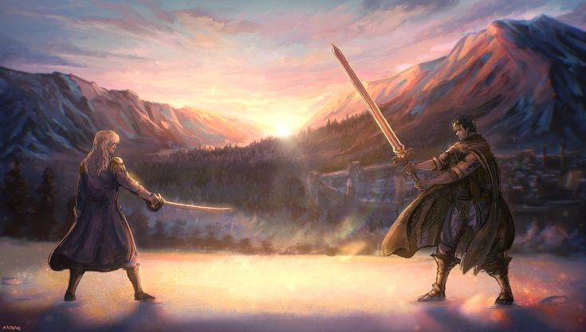

Trailer :
Genres :
- Action et Guerre
- Drame et Horreur
- Dark Fantasy
- Surnaturel
Synopsis :
Dans un monde médiéval impitoyable où la guerre fait rage, Guts, un mercenaire solitaire surnommé le « Chevalier Noir », erre en combattant des démons avec une épée démesurée.
Son destin bascule lorsqu'il est vaincu par Griffith, le charismatique chef de la redoutable « Bande du Faucon », qu'il est contraint de rejoindre.
Alors que Guts trouve enfin une famille et un but au sein de cette armée de mercenaires, l'ambition dévorante de Griffith menace de plonger tous ses compagnons dans un cauchemar surnaturel dont nul ne peut s'échapper.
Personnages :
Guts
Guts est un guerrier vagabond au passé tragique, maniant une épée gigantesque avec une force surhumaine. Orphelin et ayant toujours vécu pour le combat, il cherche désespérément sa propre raison d'exister au-delà de la violence. Sa rencontre avec la Bande du Faucon bouleversera sa vision du monde et ses liens avec les autres.
Griffith
Griffith, surnommé le « Faucon Blanc », est le fondateur et leader de la Bande du Faucon, une armée de mercenaires d'élite. D'une beauté androgyne et d'un charisme magnétique, il est un stratège de génie prêt à tout pour réaliser son rêve de posséder son propre royaume. Son ambition sans limite cache une part d'ombre mystérieuse liée à un pendentif occulte.
Casca
Casca est la seule femme commandant au sein de la Bande du Faucon, une guerrière féroce et loyale qui a gravi les rangs grâce à son épée et sa bravoure. Initialement méfiante envers Guts, elle développe un lien complexe avec lui tout en vouant une admiration absolue à Griffith. Elle incarne la force et la résilience face aux horreurs de la guerre.
Puck
Puck est un elfe de la forêt qui devient le premier compagnon de route de Guts après les événements fondateurs de son errance. Bien que petit, comique et parfois peureux, il possède des pouvoirs de guérison et une poussière d'elfe capable de rendre les esprits invisibles aux humains. Il apporte une touche de légèreté et d'humanité au parcours sombre du guerrier.
Anime :
Berserk 1997
Saison 1 : 25 épisodes
Berserk 2016
Saison 1 : 24 épisodes
Berserk : L'Âge d'Or - Mémorial édition
Saison 1 : 13 épisodes
Films :
Épisode de l'Âge D'Or (1, 2, 3)
Manga :
Nombre total de tomes : 43
Statut : en cours de publication
Auteur :
L'œuvre a été créée par Kentaro Miura. Suite à son décès tragique en mai 2021, le manga est poursuivi par son ami d'enfance Kōji Mori (qui supervise le scénario selon les notes de Miura) et le Studio Gaga (ses anciens assistants) qui se chargent du dessin.
Note :
J'ai pas finis le manga mais c'est dans la direction d'un 10/10
Commentaire :
Trop bien, complet, profond, personnages attachants et développés, dessins magnifiques, on ne parlera pas des différents carnages aka les adaptations animées.
l